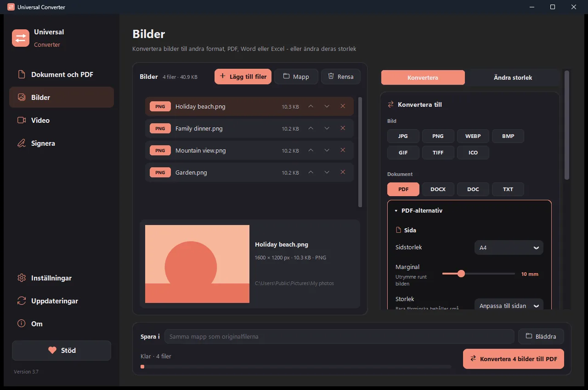
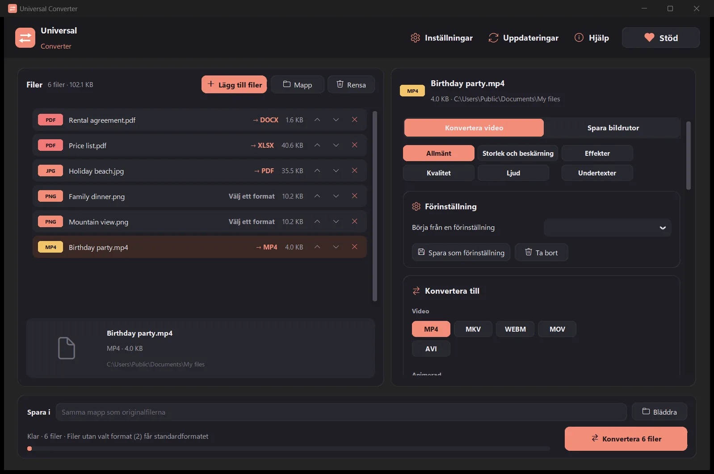
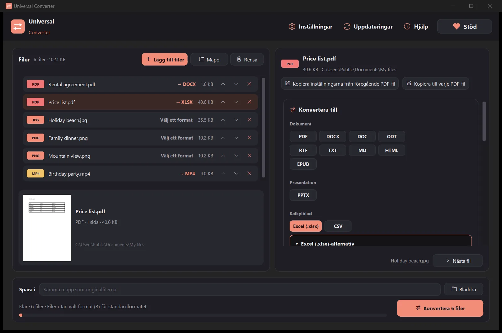
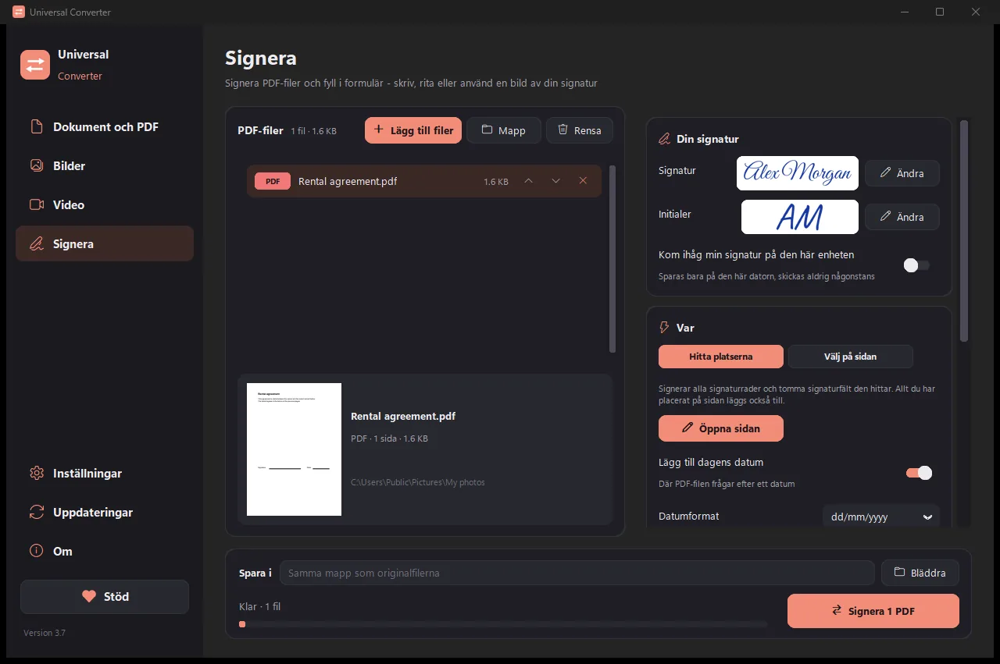

Konvertera dina filer på din egen enhet
Bilder, dokument, video och ljud, PDF-filer och tabeller till Excel, allt i en app. Inget laddas upp: dina filer lämnar aldrig din enhet.
Så installerar och uppdaterar du
- Öppna den hämtade .dmg-filen och dra Universal Converter till Program.
- Öppna appen. Första gången blockerar macOS den eftersom den inte är signerad av Apple: klicka på Klar.
- Öppna Systeminställningar > Integritet och säkerhet, rulla nedåt, klicka på Öppna ändå och ange ditt lösenord. Det gör du bara en gång.
Uppdateringar: om du tillåter det när appen öppnas första gången söker den efter nya versioner varje gång den startar, kontrollerar deras digitala signatur och installerar dem när du väljer.
Så installerar och uppdaterar du
- Tryck på Ladda ned för Android på telefonen.
- Öppna den hämtade filen. Om Android frågar tillåter du webbläsaren eller filhanteraren att installera appar.
- Tryck på Installera.
Uppdateringar: appen söker ungefär en gång om dagen och säger till när en ny version är klar. Ladda ned den på samma sätt och installera den över den gamla; dina inställningar behålls.
Så installerar och uppdaterar du
- Ladda ned .AppImage-filen.
- Gör den körbar: högerklicka, öppna Egenskaper > Behörigheter och tillåt att den körs som program (eller i en terminal: chmod +x Universal-Converter-*.AppImage).
- Dubbelklicka på den. Inget installeras: appen är den här enda filen.
Uppdateringar: om du tillåter det när appen öppnas första gången söker den efter nya versioner varje gång den startar, kontrollerar deras digitala signatur och ersätter AppImage-filen där den ligger.

Privat
Allt körs på din enhet. Inga uppladdningar, ingen kö, inga storleksgränser.
Gratis
Gratis att använda, utan reklam, utan konto och utan vattenstämpel.
34 språk
Engelska, grekiska, spanska, italienska, tyska, franska, portugisiska (Portugal och Brasilien), polska, ryska, arabiska, hebreiska, kinesiska, japanska, koreanska, tamil, afrikaans, yoruba, hausa, hindi, indonesiska, turkiska, vietnamesiska, svenska, nederländska, danska, ukrainska, tjeckiska, rumänska, bulgariska, norska, malajiska, filippinska och swahili.
Fem verktyg i ett fönster

Dokument och PDF
Konvertera mellan PDF, Word, ODT, RTF, TXT, Markdown, HTML, EPUB, PowerPoint och Excel. Gör sidor till bilder och slå ihop flera filer till en PDF. Teckensnitt, storlekar och färger behålls. Gör PDF-filer mindre, till den storlek du väljer. Skanningar och ifyllda formulär blir redigerbar text och tabeller, upplagda som sidan. Tabeller, även utan linjer som på kontoutdrag, kommer in i Word som riktiga tabeller, och gamla Word-filer (.doc) och PowerPoint-filer (.ppt) kan öppnas.
Bilder
Konvertera mellan JPG, PNG, WEBP, TIFF, BMP, GIF och ICO. Ändra storlek i pixlar, procent eller filstorlek, slå ihop bilder till en PDF- eller Word-fil och läs texten i bilder (OCR). PDF-filer kan också läggas till: varje sida blir en bild.

Video
Konvertera videor mellan MP4, MKV, WebM, MOV och AVI och komprimera dem med AV1, H.265, H.264 eller VP9. Klipp, beskär, rotera och ändra storlek, gör GIF-bilder, spara bildrutor som bilder eller behåll bara ljudet som MP3, M4A, FLAC, WAV, OGG eller Opus. Med flera videor kan var och en ha egna inställningar. På Android: MP4, MKV, WebM, MOV eller GIF, eller ljudet som M4A, OGG eller WAV; klipp, beskär, rotera, ändra storlek och spara bildrutor.

Excel
Hämta tabeller ur PDF-filer, skanningar och foton till Excel eller CSV: kontoutdrag, fakturor, prislistor. Läser grekiska, engelska, spanska och mer än 30 andra språk.

Signera
Signera PDF-filer och fyll i formulär. Skriv ditt namn i en handstil, rita din signatur eller använd ett foto av den. Appen hittar signaturraderna själv, eller så klickar eller trycker du där signatur, initialer, datum, text eller bockar ska stå. Signera många filer på en gång; originalen lämnas orörda.
- Använder grafikkortet för video när det går: oftast 5 till 20 gånger snabbare.
- Dra in hela mappar: alla filer konverteras på en gång.
- Säger till när en fil hör hemma på en annan flik och tar den dit med ett klick.
- Berättar om nya versioner; på Windows, Mac och Linux kan den installera dem åt dig, digitalt kontrollerade.
- Ljust och mörkt utseende, efter din enhet.
Så fungerar det
- Öppna Universal Converter och välj Dokument och PDF · Bilder · Video · Signera till vänster.
- Dra dina filer eller en hel mapp till fönstret, eller klicka på Lägg till filer.
- Klicka på Konvertera. De nya filerna sparas bredvid originalen, eller i den mapp du väljer.
Vad den kan göra
- Konvertera en PDF till Word
- Konvertera Word-dokument till PDF
- Slå ihop flera filer till en PDF
- Komprimera en PDF till en storlek du väljer
- Komprimera en PDF till 100 KB, 200 KB eller valfri storlek för webbformulär
- Konvertera PDF-sidor till JPG-bilder
- Gör ett skannat dokument till en redigerbar Word-fil
- Konvertera bilder mellan JPG, PNG, WEBP med mera
- Ändra storlek på bilder eller krymp dem till en filstorlek
- Ändra storlek på ett foto eller en signatur till 20 KB, 50 KB eller exakta pixlar
- Slå ihop foton till en PDF
- JPG till PDF under 100 KB
- Kopiera texten från en bild (OCR)
- Komprimera en video utan att ladda upp den
- Konvertera videor mellan MP4, MKV, WebM, MOV och AVI
- Spara ljudet från en video som MP3
- Gör en GIF av en video
- Hämta tabeller från en PDF till Excel
- Konvertera ett kontoutdrag i PDF till Excel
- Ta ut tabeller från PDF-fakturor till Excel
- Signera en PDF
- Fyll i ett PDF-formulär
Frågor
Är den verkligen gratis?
Ja. Universal Converter är gratis att använda, utan reklam, utan konto och utan tidsgräns. Om den hjälper dig kan du stödja utvecklingen med ett frivilligt bidrag, men du behöver aldrig göra det.
Laddas mina filer upp någonstans?
Nej. Varje konvertering sker på din egen enhet, så den fungerar även utan internetanslutning. Appen går bara ut på internet för att söka efter uppdateringar, för att hämta de alfabet för textigenkänning du väljer och, om du tillåter det, för att skicka anonyma felrapporter.
Är det säkert att ladda ned den?
Ja. Innan de läggs ut på den här sidan skannas nedladdningarna för Windows, Mac, Linux och Android av varje version av ungefär 60–70 antivirusprogram på VirusTotal; länken under varje nedladdningsknapp öppnar rapporten för den filen. Appen visar ingen reklam och samlar inte in några personuppgifter, och versionen i Microsoft Store kontrolleras och signeras dessutom av Microsoft.
Windows visar en SmartScreen-varning. Är det normalt?
Ja. Installationsprogrammet är inte kodsignerat än, så Windows känner inte igen det. Välj "Mer information" och sedan "Kör ändå". Uppdateringar efter det kontrolleras digitalt av appen själv. Eller installera den från Microsoft Store, som inte visar någon varning.
Hur öppnar jag den på en Mac?
Öppna den hämtade filen och dra Universal Converter till Program. Appen är inte signerad av Apple, så första gången du öppnar den blockerar macOS den: klicka på Klar, öppna sedan Systeminställningar > Integritet och säkerhet, klicka på "Öppna ändå" och ange ditt lösenord. Det gör du bara en gång.
Hur installerar jag den på Android?
Ladda ned APK-filen på telefonen, öppna den och tillåt installationen när du tillfrågas (Android 10 eller senare). Alla 34 språk är inbyggda; välj ett i appens Inställningar. Appen säger till när det finns en ny version.
Vilka språk talar den?
Appen finns på engelska, grekiska, spanska, italienska, tyska, franska, portugisiska (Portugal och Brasilien), polska, ryska, arabiska, hebreiska, kinesiska, japanska, koreanska, tamil, afrikaans, yoruba, hausa, hindi, indonesiska, turkiska, vietnamesiska, svenska, nederländska, danska, ukrainska, tjeckiska, rumänska, bulgariska, norska, malajiska, filippinska och swahili. Du väljer i installationsprogrammet, eller senare i Inställningar.